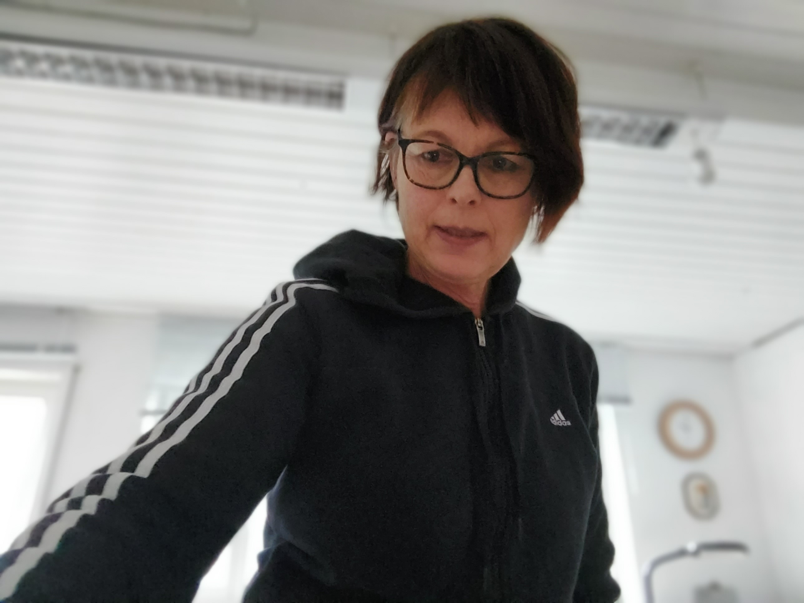
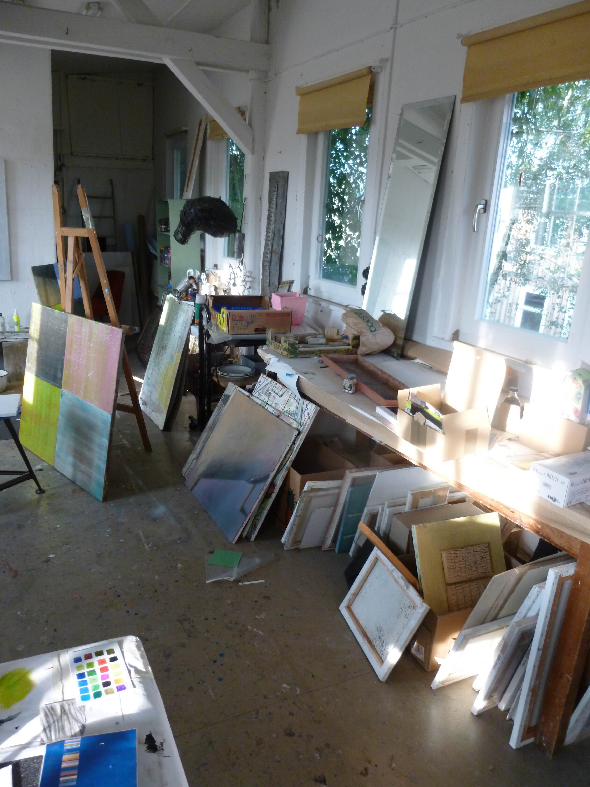
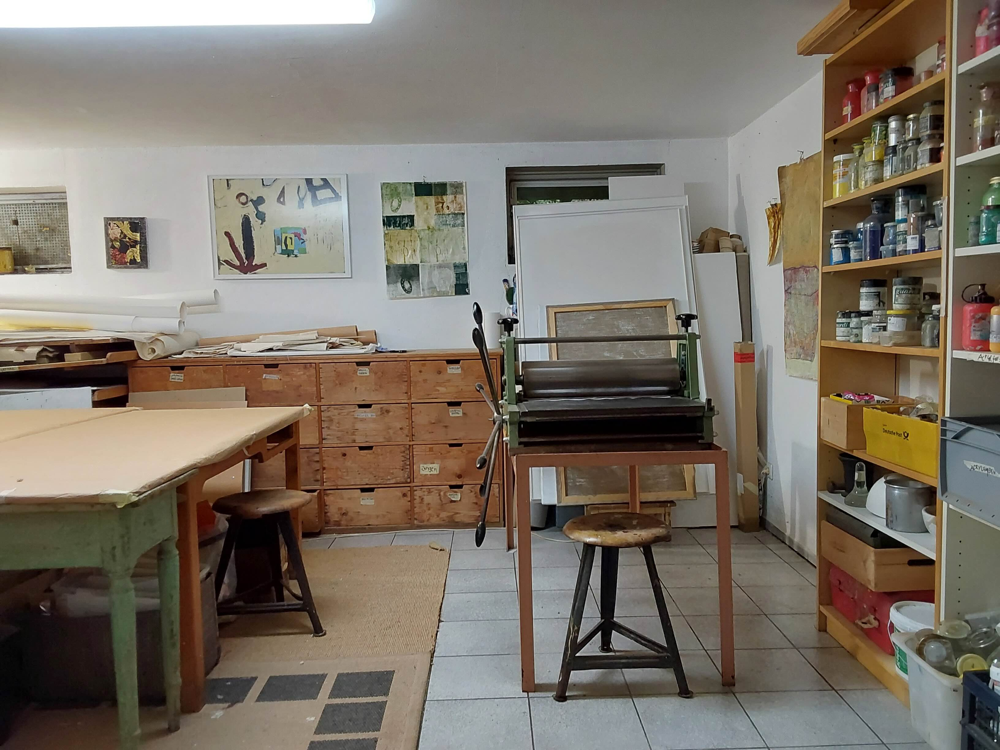

Vita
Brigitte Romann – Künstlerischer Werdegang
Geboren in Schwabach. Leistungskurs Kunst am Gymnasium, in der Folge kontinuierliche autodidaktische Beschäftigung mit Zeichnung und Malerei und diverse Kurse an den Volkshochschulen in Schwabach und Nürnberg.
Seit den 1990er Jahren regelmäßige Aus- und Weiterbildung in verschiedenen künstlerischen Techniken, u.a. an der Sommerakademie Neuburg/Donau, der Europäischen Akademie für Bildende Kunst Trier, der Bundesakademie für kulturelle Bildung Wolfenbüttel und der Thüringischen Sommerakademie für Bildende Kunst.
Wichtige Lehrer/innen sind neben anderen Joe Allen, Jörg Bachhofer, Birgit Bellmann, Claudia Chaseling, Silke Leverkühne, Gerhard Rießbeck, Markus Tepe und Jobst Tilmann.
Atelier in Thüringen (2002-2021)
Lebt und arbeitet seit 2002 in Nürnberg und in Böhlen/Thüringen. Von 2014 – 2019 Assistentin der künstlerischen Leitung bei der Thüringischen Sommerakademie für Bildende Kunst und 2020 bei den Kinderkunstwochen Nürnberg (Komiki).
2009-2020 Beteiligung an mehreren Gruppenausstellungen in Thüringen, 2021 erste Einzelausstellung („WOHER – WOHIN… 20 Jahre Atelier Fabrikhof Böhlen“)
sommer-akademie.com/archiv/
Atelier in Schwabach (seit 2021)
2021 Aufgabe des langjährigen eigenen Ateliers in Thüringen, lebt und arbeitet seitdem wieder in Schwabach.
2022-2024 Studium Bildende Kunst an der Akademie Faber Castell in Stein. Erfolgreicher Abschluss mit Beteiligung an der Ausstellung FAZIT 2024.